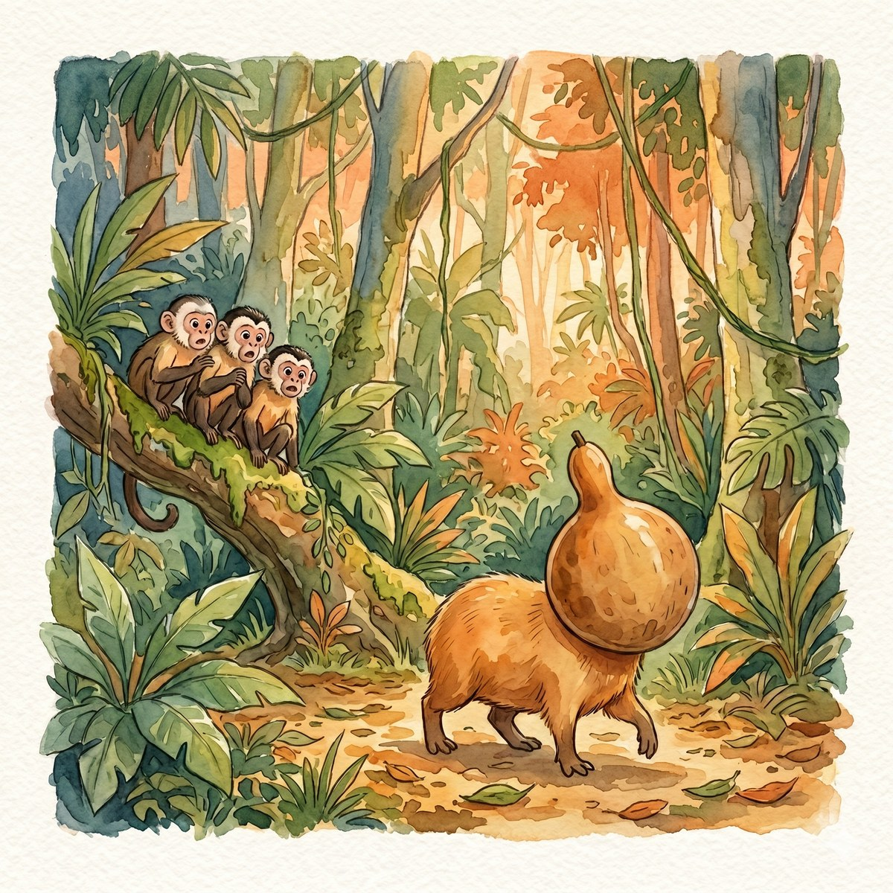
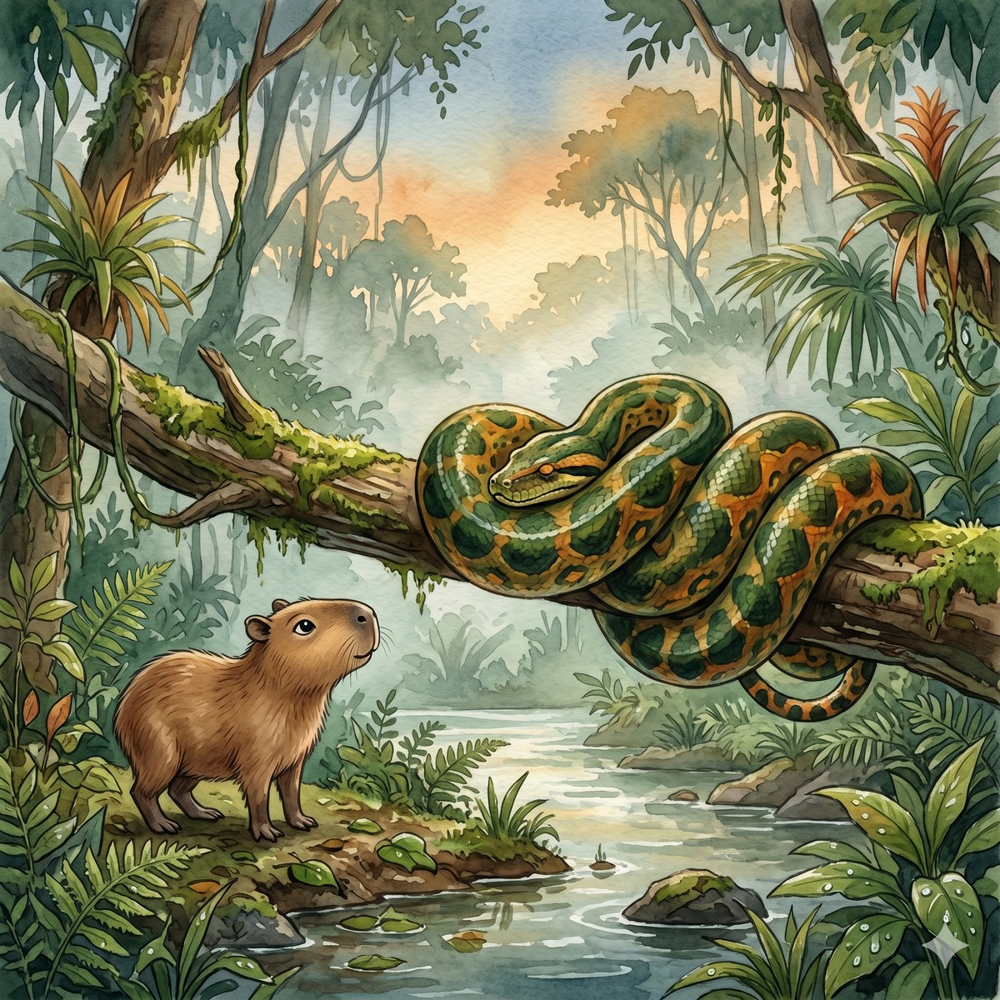
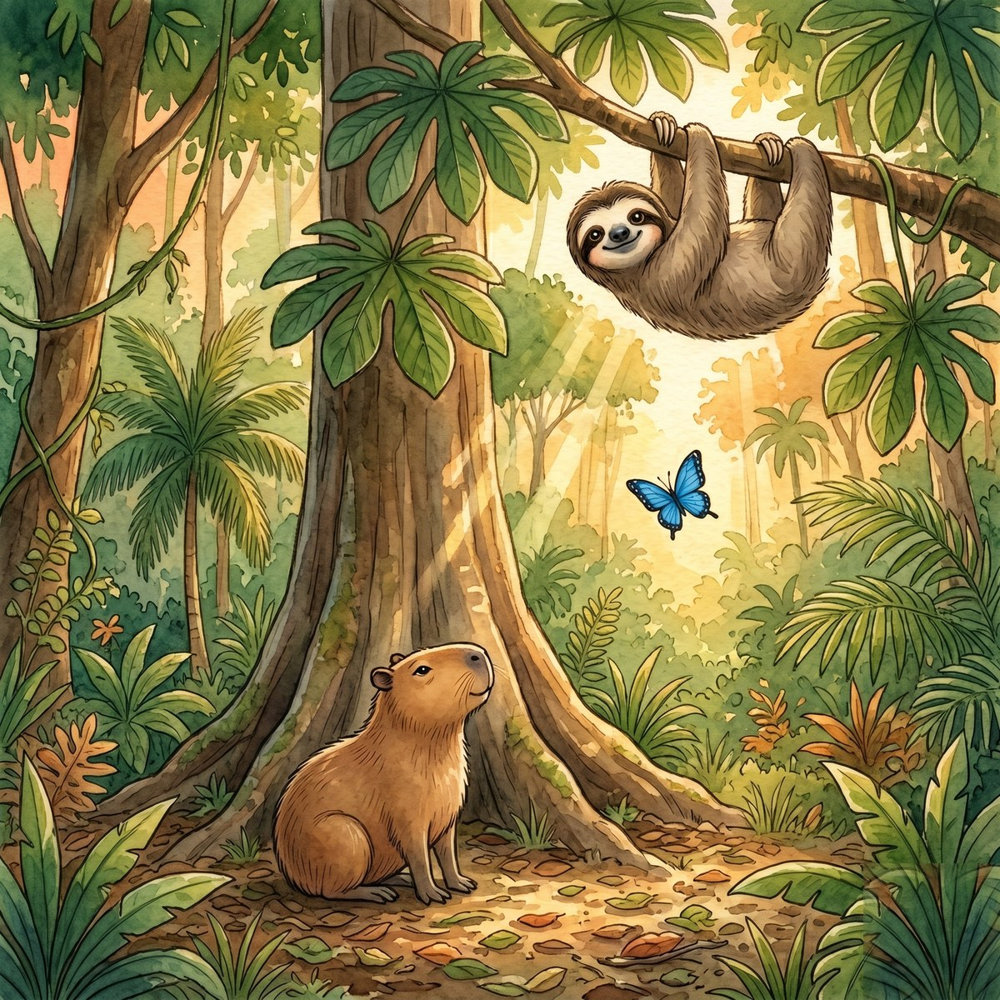
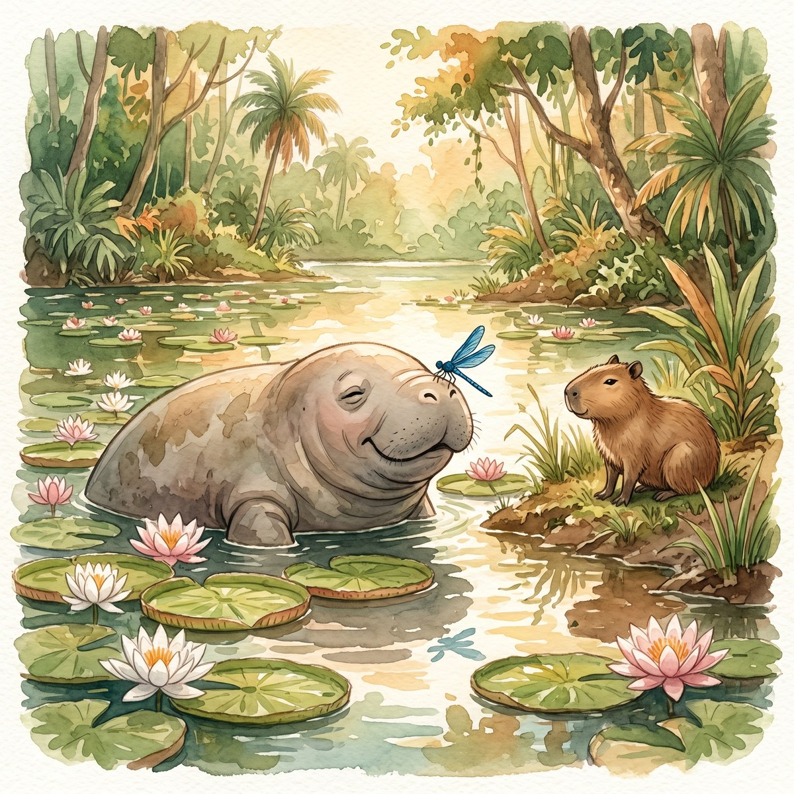

En la selva amazónica vive Karmina, una capibara curiosa que aprende del río, del bosque y de los animales que la rodean. En este primer tomo, ocho historias breves la acompañan en sus encuentros con un perezoso que sabe esperar, una anaconda que solo dormía, un manatí que abraza con su calma, una mariposa morpho que se despide… y otros amigos.
Cada cuento se lee en uno a dos minutos. El libro completo, unos veinte minutos. Ideal para leer uno cada noche durante una semana, o varios en una tarde así. Cada historia cierra con un pequeño "¿Sabías que…?" que cuenta algo verdadero sobre el animal, la planta o la cultura amazónica que aparece. Los niños se llevan ternura y dato de la Amazonía.
Las ilustraciones, en acuarela cálida, acompañan cada historia. Si imprimes el libro en casa, se vuelve un objeto bonito para tener en la mesa, en la maleta del paseo, o en la mano de quien lee en voz alta.
Karmina es un libro para días sin prisa. Para leer con la familia bajo un árbol, en el sofá, en el patio. Para que los niños descubran que la selva amazónica está viva, que sus animales tienen alma, y que hay otras formas de mirar el mundo además de la pantalla.
No enseña con regaños ni con moralejas. Enseña como enseña la selva: dejando que el lector se siente, mire, respire y entienda solo.
Qué incluye
- PDF de 30 páginas en alta calidad — celular, tablet o PC
- 8 historias originales de 1 a 2 minutos cada una (~20 min completo)
- 8 ilustraciones acuarela a página completa, una por historia
- 8 mini-fichas naturalistas "¿Sabías que…?" con datos reales
- Apto para imprimir en casa en tamaño A5 (libro de bolsillo)
- Lectura recomendada: niños de 6 a 10 años, acompañados o solos
Las ilustraciones
Cuatro páginas del libro. Acuarela cálida, una por historia.




Precio
$5 USD sugerido
Paga lo que quieras, desde $3 USD
La plataforma convierte automáticamente a tu moneda local en el checkout (COP, MXN, EUR, ARS, CLP…).
Sobre el autor
Jaime Río es el seudónimo bajo el cual escribo cuentos infantiles desde Colombia. Karmina nació de noches lentas, conversaciones con los más pequeños y un cariño antiguo por la selva amazónica. Este es el primer tomo de una serie que crece despacio, como crece un árbol del bosque.
Disponible el 3 de junio
El libro se publica en formato PDF descargable. Mientras tanto, podés ver el preview gratis con la primera historia completa.
Descargar preview gratis